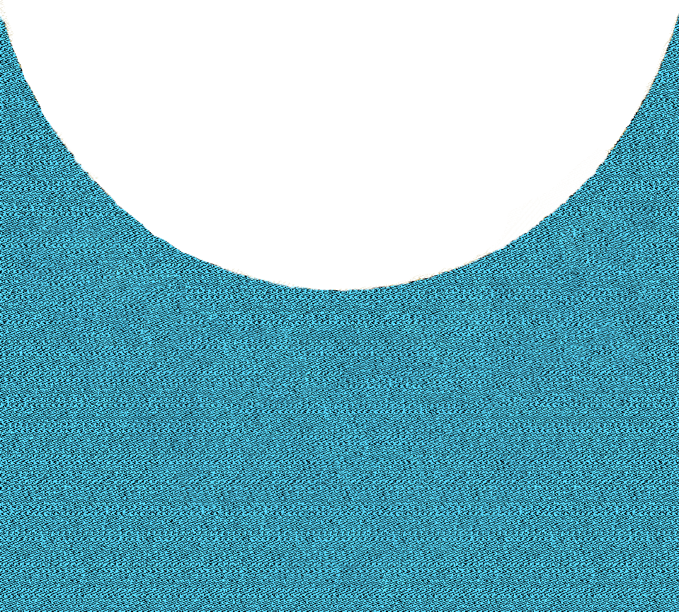

In the beginning God created the heavens and the earth. Now the earth was formless and empty, darkness was over the surface of the deep, and the Spirit of God was hovering over the waters.
And God said, “Let there be light,”

and there was light.
God saw that the light was good, and
he separated the light from the darkness.
God called the light “day,”
and the darkness he called “night.”
And there was evening, and there was morning—the first day.
And God said, “Let there be a vault between the waters to separate water from water.” So God made the vault and separated the water under the vault from the water above it. And it was so.
God called the vault “sky.” And there was evening, and there was morning—the second day.
Then God said, “Let the land produce vegetation: seed-bearing plants and trees on the land that bear fruit with seed in it, according to their various kinds.”
And it was so. 12 The land produced vegetation:
plants bearing seed according
to their kinds and trees bearing fruit with seed in it according to their kinds. And God saw that it was good. 13 And there was evening, and there was morning—the third day.
God called the vault “sky.” And there was evening, and there was morning—the second day.
God called the vault “sky.” And there was evening, and there was morning—the second day.